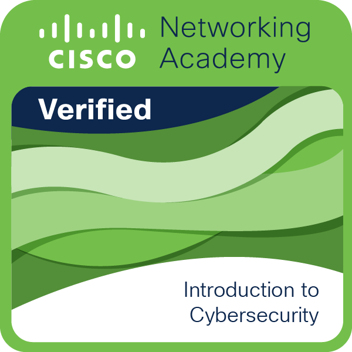

Qui suis- ?
Je m'appelle Arno BRUCHOT, j'ai 18 ans, je suis actuellement étudiant en BTS SIO (Services informatiques aux Organisations) au Lycée Merleau Ponty en option SISR (Solutions d'Infrastructure, Systèmes et Réseaux).
=======Qui suis-je ?
Je m'appelle , j'ai 18 ans, je suis actuellement étudiant en BTS SIO (Services informatiques aux Organisations) au Lycée Merleau Ponty en option SISR (Solutions d'Infrastructure, Systèmes et Réseaux).
>>>>>>> 46ecbc7edd9e35cfa3a9d6f318a65ca8d6fcfe3bCe portfolio fait partie de mon parcours en BTS SIO. Il me permet de présenter mes compétences, les projets sur lesquels j’ai travaillé et mon évolution dans le domaine de l’informatique.
À propos
Pour commencer : mon parcours scolaire
BTS SIO Option SISR – Merleau Ponty (Rochefort - 17)
Option : Maths approfondies
2024 - En cours
Bac général - Lycée les Iris (Lormont - 33)
Option : Mathématiques - NSI (Numérique et Sciences de l'Informatique)
2023 - 2024
Brevet des collèges - Collège Max Linder (Saint-Loubès - 33)
Mention : Bien
2020 - 2021
Mes certifications
Introduction à la cybersécurité
Notions fondamentales de la cybersécurité et bonnes pratiques de protection.
Introduction to Modern AI
Principes de l’intelligence artificielle moderne et ses domaines d’application.
Numérique Responsable
Comprendre l’impact environnemental du numérique et adopter des usages durables.
Stage
Mon stage de 1ère année de BTS SIO s'est déroulé chez Groupe Berto à Saintes, du 10 au 21 juin 2024.
J'ai eu l'opportunité de travailler sur divers projets, notamment la création d'un site web pour le service informatique et la mise en place d'une infrastructure réseau.
Projets
Mes projets ici...
Contact
Formulaire ou coordonnées...